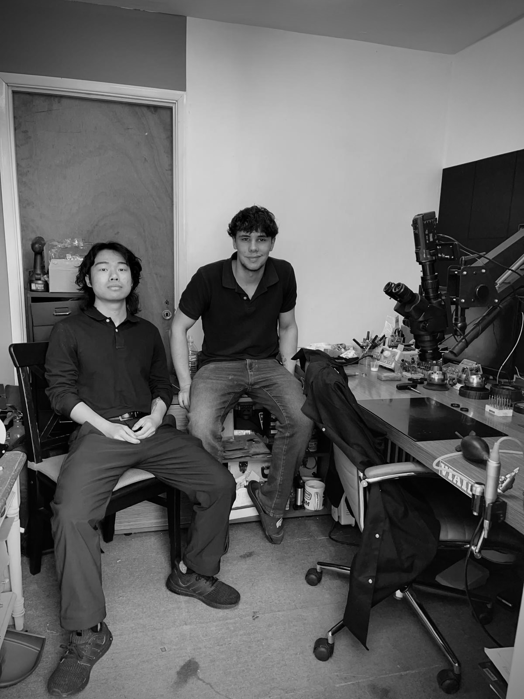

About George Che
I am a New York based jeweler specializing in hand-fabricated jewelry. My work is focused on building pieces from start to finish, combining design, fabrication, stone setting, and finishing within a single process.
I work primarily with a blend of modern and traditional techniques, emphasizing clean construction, proportion, and long-term durability. Each piece is fabricated by hand, allowing the design to develop directly around the stone rather than relying on pre-made components.
I work with both diamond and rare colored stones, with a particular interest in precision-cut and well-calibrated gems. Careful fabrication allows for accurate stone seating, refined geometry, and a cohesive overall structure.
Alongside fabrication, my practice includes stone setting, paving, and engraving, bringing multiple disciplines together in a considered and integrated way.